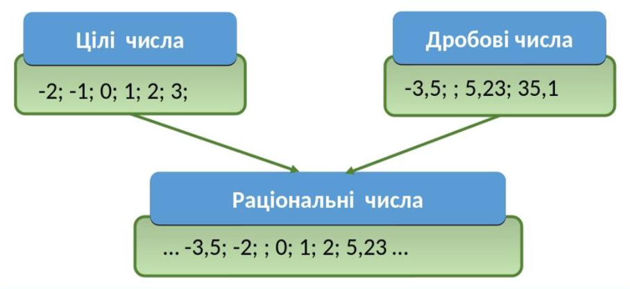

Раціональні числа
Раціональні числа – це числа, які можна подати у вигляді дробу з цілим чисельником і натуральним знаменником.
Цілі числа (додатні, від’ємні та 0), дробові числа (додатні та від’ємні) складають множину раціональних чисел, яку позначають символом ℚ.
Будь-яке раціональне число можна записати у вигляді відношення

Наприклад:

r – раціональне ==> r ∈ ℚ
Сума, різниця, добуток і частка раціональних чисел є також число раціональне.
Раціональні числа можуть бути представлені скінченим або нескінченним десятковим періодичним дробом.
Наприклад:

Кожне раціональне число можна подати у вигляді нескінченного періодичного дробу.
Кожний нескінченний періодичний десятковий дріб зображає деяке раціональне число.